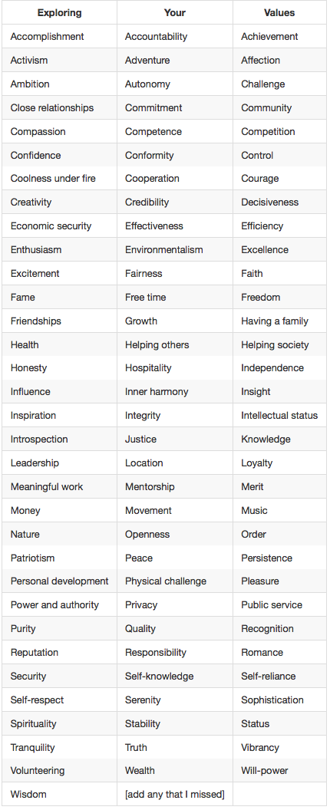

If you had to pick a value that was in the forefront of your mind during times in your life where you've been the happiest, proudest, or most satisfied, what values would come to mind? I'm talking about values at the level of specificity listed below.
I think for most people, including myself, there's one value to rule them all for this list, and that's accomplishment. Ultimately, humans are driven from desire, which is a byproduct of what makes them feel happy by thinking about it, which-- in generalization-- itself is a byproduct of our dopamine levels. Accomplishment is that next level in the chain from desire; it is the end game/state of what desire seeks for its subject to be put into. Although studies show that dopamine is highest in anticipation of such a state/goal, there's no denying that when one gets what they want, they intrinsically feel happy. If you take a look at the list of other values, each of these values can have a level of accomplishment associated with it. At first I wasn't sure if this governing value should be accomplishment or achievements, as their definitions are very similar. However, I think accomplishment have a nuance of obtaining more intangile things, and achievement is a subset of accomplishment.
So do I try to live up to these values? Heck yeah! I have no choice as that is inherant in human behavior. I always seek to accomplish (and achieve) what I want. I live up to those values because it is the only way to live. Most certainly the ceoncept of accomplishment can be used to mitigate any perceived stereotype threat. The very act of perceiving it and understanding its negative effects will cause one to create a drive to accomplish the removal of it-- because its continued existence is a threat to them and ultimately lessens their chances for survival.
You may be wondering what specific exercises can be used to help mitigate such a situation of stereotype threat if it were to arrive? For me I can feel very discrete levels of focus and mental stimulation. I find that what gives me a boost are any of the following:
Listening to very beautiful, harmonious, and moving music.
To be dead honest, looking at or being around gorgeous women (but not in a sexual way), particularly stirring your romantic neural pathways.
Consciously reminding myself that how you feel dictates so much of your mental perfomance
For that last point, I've realized that we may spend so much conscious energy trying to think certain ways so that we can perform certain ways. However, if we can just simplify this by instead just directing our minds to feel the way we want to feel, by achieving it from a top-level, the rest of our desired mental results will naturally flow through. THis can also be thought of as getting into the zone. There's a good chance this is not a Catch 22 either. Finally, I play this cool word game called Ruzzle that I use as a quantitative way to tell how sharp or focused I am at a given moment. It seems to be a very good test.